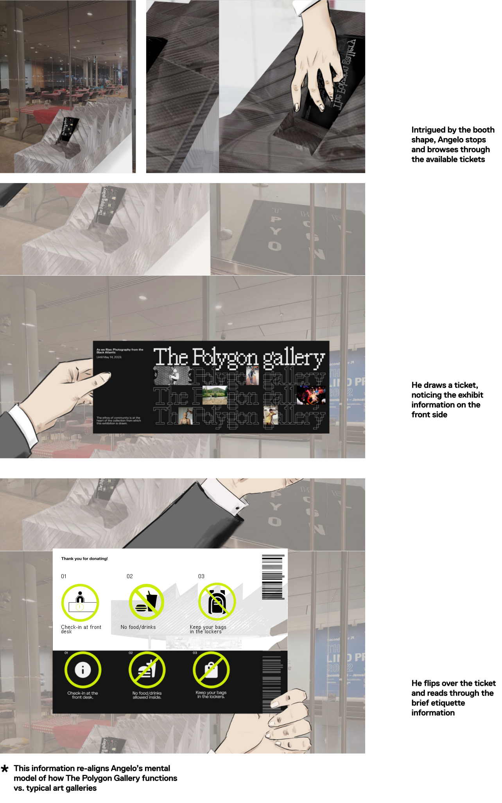

the polygon
gallery
Resolving customer/worker pain points while supporting the galleries
goal of becoming the
cultural anchor of the Shipyards Community.

Roles
Team
Project Scope
Tools
Research, Strategy, Graphic Design,
Product Strategy
Hugo Duran, Gregory Withers, Abigail
Hao, Jung-Yeon Lee, Cindy Ye
13 week school project
- IAT 333 - Spring 2023
Figma
brief
My team was tasked with finding a client and exploring a design
intervention. We were lucky to be able to work with North
Vancouver’s The Polygon Gallery.
the client
Known worldwide for it’s award winning architecture and its
relentless strive to create pathways for new voices within lens
based media art,
The Polygon Gallery is dedicated to creating a
welcoming, barrier-free space for everyone, allowing art to be
accessible to anyone interested.

identifying the problem ethnography
Based on ethnography done throughout the totality of the project, we
identified troublesome touchpoints
early in the Polygon’s Gallery
experience. The gallery’s architects had the form of the building in mind,
assuming people would be able to locate themselves through
a generally small venue space without problems.
While the architectural
beauty is undeniable, the functionality leaves more to be desired from.


The main issue entails the entrance of the gallery. From our own
personal experience and external
ethnography, we realize the layout
of the gallery is unlike any other “common” gallery. The general idea
of
a step based layout can not be found at The Polygon, leading
patrons of the gallery completely ignoring the front
desk at which
the ticket buying process is available. Visitors are mostly
unaware of the ethics and etiquette
of the gallery,
making the workers have to chase down the wondering visitors
unaware of these rules.

Due to a lack of direction towards the front desk (which seems
only dedicated to the shop) and the bleeding
of spaces with
no defined separation, the visitors end up wondering in areas
reserved for those that previously
checked in. The workers then
need to interrupt the discovering process of the patrons, leading
to an uncomfortable
confrontation between the two.

At this point, we had a design workshop designed to reveal what space
of the gallery is most important to them. We participated alongside Asia
Harvey, the Gallery’s
Sales Manager, and Rhonda Schultz, the Gallery’s
Guest Services and Volunteer Supervisor.
We participated in 3 exercises;


the final product
After 3 weeks of sprint exercises and iterative approaches we
found our final problem space:
Looking at The Polygon’s current physical assets, we noticed
they do not have a ticket or a ticketing
system due to the fact
that they are on a by-donation basis. We found this to be a
great area to operate in for our
final solution space. By locating
a ticketing system before the patrons come in to the gallery,
we can inform
newcomers of the gallery’s etiquette, and
reiterate it to repeat customers. This can create expectations
to
those coming repeatedly to the gallery on how to operate
and where to go within the gallery so that there is no
need
to be interrupted by the understaffed gallery.
journey framework

3-D mockup